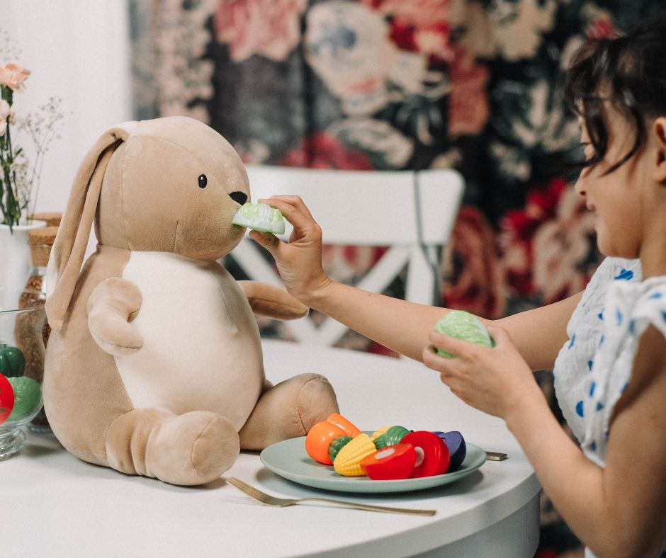

Jobb hos oss
Bli en vikarkollega, ikke bare en vikar.
Vil du jobbe med barn, ha mulighet til å velge dager selv, og vite at du er ordentlig skolert før du låser opp døren? Da vil vi gjerne snakke med deg.
Hvem vi ser etter
Du trenger ikke være utdannet førskolelærer for å bli vikar hos oss. Men du må like barn, møte opp, og ta ansvar når du står alene med en gruppe.
- ✓Du er trygg på barnDu klarer å ta ledelsen i en samling og å være en rolig voksen i hverdagen.
- ✓Du er påliteligDu kommer når du har sagt du skal komme, og sier fra i god tid hvis du ikke kan.
- ✓Du er nysgjerrigDu kjenner ikke alle barnehager — men du er villig til å lære rutinene der du kommer.

Veien inn
Slik blir du vikar hos oss.
1. Du tar kontakt
Send en kort beskrivelse av erfaringen din og når du kan jobbe. Vi svarer alle som tar kontakt.
2. Intervju og referanse
En samtale om erfaring, motivasjon og forventninger. Vi ringer referansene dine.
3. Vikarmøtet
Obligatorisk gjennomgang av rutiner, taushetsplikt og hva barnehagene forventer. Deretter er du klar.
«Jeg har lært kjempemye gjennom Barnehageressursen og forskjellige barnehager. Jeg kommer også til å savne å bli ringt og spurt om jeg kunne tenke meg å jobbe i morgen.»
Erlend · vikar i Barnehageressursen
Lønn og vilkår
Alle vikarer lønnes etter tariff. Du får skriftlig oppdragsbekreftelse for hver vakt, og vi fører timene dine slik at lønnsslippen er til å forstå.
Du bestemmer selv hvor mye du vil jobbe. Mange kombinerer dette med studier — vi tilpasser oss eksamensperioder, men setter pris på at du sier fra i god tid.